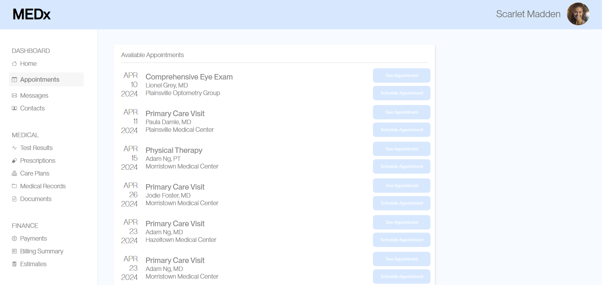

Part 1: Data Collection
I ran an A/B test on a simple webpage that is responsible for scheduling appointments with a medical practitioner.
The target interaction was to schedule an appointment, and the measured metrics were:
- time spent on page
- time before the user first clicks
- total distance the cursor moves
- number of clicks
- whether or not the user misclicked
- whether or not the user succeeded in scheduling the appointment
The orignal webpage looked like this

And my updated webpage looked like this
Part 2: Analysis
Creating Hypotheses
There are three metrics that we are using to determine whether or not
my design choices reasonably impacted user interaction: Time spent on
page, misclick rate, and total distance of cursor movement. Below, I
dive into the details of why I used these metrics, the null
and alternative hypotheses for each of the metrics, and the reasoning
behind choosing these hypotheses.
- Time spent on page
- More time spent on the page indicates a user confusion
- The null hypothesis is that users spend the same amount of
time on webpage A as they spend on webpage B
- The alternative hypothesis is that users spend more time on
webpage A than they spend on webpage B
- I believe that the null hypotheses will be rejected because
webpage A has low color contrast in their buttons, their
appointments are not ordered by calendar, and buttons of
different functionalities appear the same. All of these
reasons combined may cause the user to take a longer time
to search for the appointment slot they are looking for
- The reasoning for this alternative hypothesis is that
webpage B's increased color contrast, ordering of appointments
by calendar, and side-by-side button layout, and differing
button colors that depend on functionality could aid the user's
pattern recognition ability to clearly identify the target
interaction and make an appointment faster
- Misclick rate
- A higher misclick rate suggests a more misleading elements
- The null hypothesis is that the rate at which users misclick is
the same on webpage A as it is on webpage B
- The alternative hypothesis is that the rate at which users
misclick is more on webpage A than it is on webpage B
- I believe that the null hypotheses will be rejected because
webpage A has low color contrast in their buttons, which makes
it hard to read the text of the buttons. Furthermore, buttons of
different functionalities appear the same visually and exist in
the same column, which may mislead the user into thinking that
the different buttons do the same thing.
- The reasoning for this alternative hypothesis is that
webpage B's increased color contrast, side-by-side button
layout, and differing button colors based on functionality
could aid the user's pattern recognition ability to clearly
identify the target interaction and reduce the chance of a
misclick.
- Total distance of cursor movement
- A higher distance of cursor movement indicates that the user is going
back and forth, which could mean that the webpage layout is difficult
to navigate
- The null hypothesis is that the users move their cursors the
same amount on webpage A as they do on webpage B
- The alternative hypothesis is that the users move their cursors
the more on webpage A than they do on webpage B
- I believe that the null hypotheses will be rejected because
webpage A has low color contrast in their buttons, their
appointments are not ordered by calendar, and buttons of
different functionalities appear the same. All of these
reasons combined may cause the user to hover their cursors
over misleading buttons before completing the target interaction.
- The reasoning for this alternative hypothesis is that
webpage B's increased color contrast, ordering of appointments
by calendar, and side-by-side button layout, and differing
button colors that depend on functionality could aid the user's
pattern recognition ability to clearly identify the target
interaction and execute it without wasted cursor movement.
Run Statistical Tests on the Data
- Time spent on page
- I chose to use a one-tailed t-test since it is useful for
determining whether the mean value of a single group is
greater than the mean of another group.
- The difference between versions A and B with respect to
time spent on page is statistically significant
- Degrees of Freedom: 22
- There are 22 independent values in a calculation that are
free to vary, adjusting the shape of the statistical distribution.
As the degrees of freedom increase, the distribution becomes
narrower and more closely resembles the standard normal
distribution, indicating reduced variability and increased
accuracy in the estimation of the population parameter.
- T-score: -4.421388035
- This means that the mean amount of time that users spend on
webpage B is roughly 4.4 standard deviations away from the mean amount
of time that users spend on webpage A.
- P-value (A < B): 0.0001002924201
- This means that, assuming the null hypothesis is true, the
probability that we observe users spending this much time on
webpage B is 0.01%. This p-value is below the threshold of 0.05,
which makes the difference in metrics statistically significant,
allowing us to reject the null hypothesis.
- We reject the null hypothesis that users spend the same
amount of time on webpage A as they spend on webpage B
- Misclick rate
- I chose to use a chi-squared test it is useful for determining
how likely a distribution of categorical data, like whether or
not a user misclicks, is categorical.
- The difference between versions A and B with respect to
misclick rate is statistically significant
- Degrees of freedom: 1
- There is 1 independent value in a calculation that is
free to vary, adjusting the shape of the statistical distribution.
As the degrees of freedom increase, the distribution becomes
narrower and more closely resembles the standard normal
distribution, indicating reduced variability and increased
accuracy in the estimation of the population parameter.
- Chi^2: 6.063454759
- This value is compared to a chi-squared distribution table at a
specific significance level and degree of freedom to determine if
any observed differences occured by chance
- P-value: 0.01380074489
- This means that, assuming the null hypothesis is true, the
probability that we observe users not misclicking once on
webpage B is 1.38%. This p-value is below the threshold of 0.05,
which makes the difference in metrics statistically significant,
allowing us to reject the null hypothesis.
- We reject the null hypothesis that the rate at which users
misclick is the same on webpage A as it is on webpage B
- Total distance of cursor movement
- I chose to use a one-tailed t-test since it is useful for
determining whether the mean value of a single group is
greater than the mean of another group.
- The difference between versions A and B with respect to
total distnace of cursor movement is statistically significant
- Degrees of Freedom: 22
- There are 22 independent values in a calculation that are
free to vary, adjusting the shape of the statistical distribution.
As the degrees of freedom increase, the distribution becomes
narrower and more closely resembles the standard normal
distribution, indicating reduced variability and increased
accuracy in the estimation of the population parameter.
- T-score: -4.628889264
- This means that the mean amount of time that users spend on
webpage B is roughly 4.6 standard deviations away from the mean amount
of time that users spend on webpage A.
- P-value (A < B): 0.00006251348512
- This means that, assuming the null hypothesis is true, the
probability that we observe users spending this much time on
webpage B is 0.006%. This p-value is below the threshold of 0.05,
which makes the difference in metrics statistically significant,
allowing us to reject the null hypothesis.
- We reject the null hypothesis that the users move their
cursors the same amount on webpage A as they do on webpage B
Summary Statistics
For webpage A, there was 23 data points, and for webpage B, there
were 20 data points. The two sample sizes are pretty similar which
makes for a better comparison betwene the two samples. For the
total amount of time users spent on the page, the mean for webpage
A was roughly 22325 milliseconds while the mean for webpage B was
roughly 8071 milliseconds. The median values were 20237 and 8199
milliseconds respectively. This means that the distributions were
skewed to the right for webpage A and skewed to the left for webpage
B. For the total distance of cursor movement, the mean for webpage
A was roughly 6471 pixels while the mean for webpage B was roughly
2162 pixels. The median values were 5533 and 2118 pixels respectively.
This means that the distributions were skewed to the right for both
webpages. Cumulatively, these tests seem to suggest that the changes
made for webpage B were able to streamline the user's decision making
process by reducing the time spent to complete the task, reducing
the rate of misclicking, and reducing the amount of movement needed
to complete the task.